Note on commented games
by Master Lim

Final of the LG Cup 2001 (1-32): Lee See Dol vs Lee Chang Ho
Final of the LG Cup 2001 (1-32): Lee See Dol vs Lee Chang Ho
Master Lim is a historic figure in the game of Go in France. He taught Go for more than 30 years and was the first high level player in France. The teaching of Master Lim was always orientated towards iintellectual independence, the capacity to develop your own analysis. It is in this spirit, a critical spirit embedded in his way of living, that Master Lim offers his own interpretation of the games of the best players in the world, of which many were played in the quarter-finals of the LG Cup in Paris in November 2000.
The Ligue de Go d'Ile de France, who act with vigour in the development of Go in France, meet with enthusiasm the publication of this work. It will be a precious aid in the understanding of the game, in particular in its global component, from a distance the most difficult and the most abstract.
Frédéric Renaud
President de la Fédération Française de Go
It is completely natural that we begin this series of booklets for the use of Go players with Master Lim. We must thank those who have facilitated the publication of this work through their volunteer work, foremost Dohy Hong for the typesetting and Cyrille Deuss for the diagrams.
In this ressurection of "Noir et Blanc", Master Lim displays once again his science and his brand of critical analysis. While the professional players are treated without respect, we, the fans of Master Lim know that his intentions are pure. Here the search for the truth comes before superficial images and social conventions. Also, if the shape of this work and the raw language of the author can surprise the neophyte, there is every advantage to work seriously through the diagrams, to follow the invitation of Master Lim to respond to the debate he starts and to accompany him in the incessant quest for the truth.
Arnaud Knippel
President de la Ligue de Go d'Île-de-France
This book is an adventure in the domain of the theory of Go. It invites to the debate players of all levels, and notably the established amateurs. It can not then be excluded that despite the elaborate study of the author, that it contains some technical errors or gaps.
Certainly, to take the risk to find new moves is our privilege to ourselves, the amateurs, and the professionals do not dare to take it lightly, because their life depends on the win or loss of their games.
My dear readers, if you find an error in this book, do not hesitate to protest and present the diagrams supporting your opinion.
For those players at kyu level, the author offers the following advice:
This is a game between Ţăranu Cătălin (4th dan pro. Romanian of the Nihon Ki-In) and Hans Pietsch (4th dan pro. German of the Nihon Ki-In), which was broadcast by the NHK and published in Go-Weekly on 17/01/2000.
| 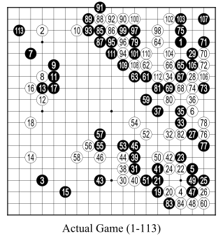 |
White: Cătălin Ţăranu
Black ought to have continued the joseki 27->47. Next, 27, 28 ->49. 30 is premature (30->49). One has the impression that the two players play without direction. 64 is premature: 64->104. If Black had played 65 at 66, the game would be over. 73 is negative. Finally, Black won. It is not a good game: coherent, but aleatory. |
* * *
Honinbo Jowa said: "The essential technical skill in Go is to know to judge the knub of a game in the thirty or fifty opening moves of the game". If we play badly in the beginning, then there will be nothing good to follow. According to Master Go Seigen, the young Shuei, 19th Honinbo, conceived of ten thousand fuseki to employ against the 18th Honinbo Shuho. Inspired by Shuei, Master Go Seigen conceived hundreds of fuseki, and now once more, he works with energy (A way of play for the 21st Century).
It's a real shame, it is not uncommon these days to find bad moves played by professionals even in the first twenty moves of their game. Utaro Hashimoto (old 9th dan, rival of Go Seigen) said "he who plays a single good game in the whole of his life is one of the best professionals". He recalled "One day in the winter of 1944, when the was in the Pacific had turned bad for Japan, somewhere in Tokyo, in a cold room without coal, without sponsor, I played a game with Go Seigen, and I won with White by a point without counting the komi. IN this game, there was no bad move neither by White nor by Black, so there was nothing to criticise. For all the rest, all my other games are so bad that the disgust me to the point of nausea. Ah, what shame!". What is then the philosophy of Go? It's to learn to be ashamed of yourself.
That is to say, at the level of confuciusism, a rigourous sense of self criticism to recognize errors.
* * *
At the start of this game, White made grave errors. But, Black has not taken them into account, he has not punished them. The author will demonstrate in a cartesian manner that Black can win by fifteen points without taking any risk.
|
Fig. 1: In casting an eye over the opening up to move 18, the author detected a bad sign for White, and an idea came to him in a flash, because Black has built the wall 7-17 in sente, and the shape 8-18 is thin (usui). Furthermore, move 6 is questionable. First of all, setting Fig. 1 to one side, we should more closely examine this move. Dia. 1: The origin of 6 in Fig. 1. White: Cristian Pop, Black: Cătălin Ţăranu, Fujitsu 1997. 9 is a funny move (c.f. Dia. 2). Dia. 2: In playing 9, Black should push White against the black shimari. Next, he must play 11 as a pincer. |
| 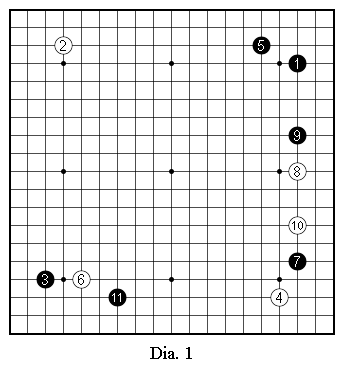 | 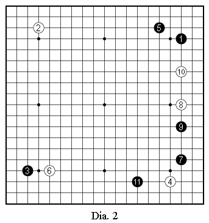 |
| 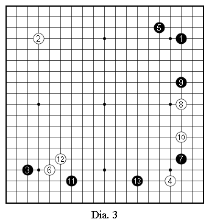 | 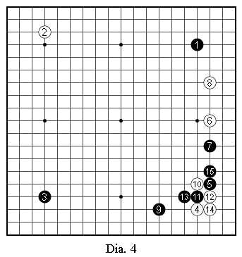 |
Dia. 3: And another game: White: Guo Juan, Black: Cătălin Ţăranu, Fujitsu Feb. 1988. Guo said "I played 8 to make the follow up easy" - European Go Journal. This is very debatable. Returning to Fig. 1, we must examine several variations after Dia. 2.
Dia. 4: If Black makes tsuke at 10, we envisage play up to 15. Owing to the presence of 7, there is no question of shicho. There are other variations: Dia. 5,6,7,8,9.
Dia. 5-9: The diagrams 5-9 are unfavourable for White. The author cannot find a good perspective for White.
| 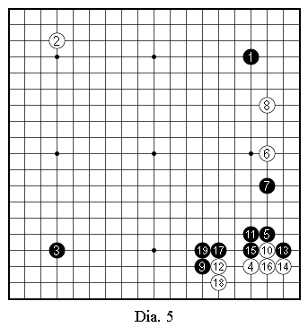 | 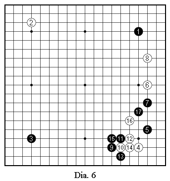 |
| 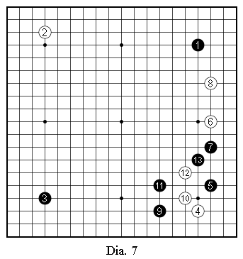 | 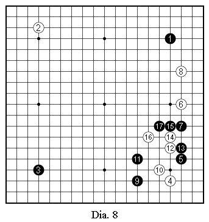 |
Dia. 10: If Black plays 7 at the other side, it is another game.
After 10, there is a question of the shicho. In this game, 2 is a shicho breaker (black 11 at A, white B, black C, white D, black E). This diagram is slightly favourable for White. In contrast, if the shicho doesn't work, it is catastrophic for Black. But, later, according to the play, if Black finds a favourable solution to the shicho for himself, he will not hesitate to play 7 in Dia. 10.
For the moment, the provisional conclusion of move 6 (Fig. 1) according to the author, is that it is a slow move or perhaps obscure.
| 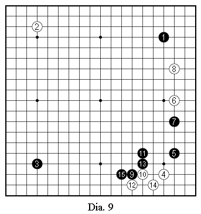 | 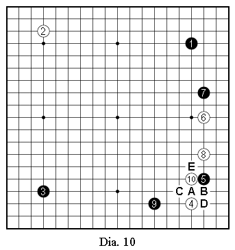 |
The second important point in the game is that characteristic of "Tasuki" fuseki (literaly: two cords which cut the jacket diagonally from the shoulders to the knee, a fighting shape). With Tasuki, in the opponent's corner, it is better not to play a large joseki, because the latter brings two sources of anguish: ko and shicho. In the real game, White allowed Black to create a wall in sente; it is the first error of White. The second is to have neglected to check diagrams 4 to 10, and notably diagram 10.
Where should White play 6? The author advices to play 6 at A in Fig. 1 to invite Black into a real fight. In this case, Black should not play 7 at B (Dia. 11, 12), nor at C (Dia. 13).
| 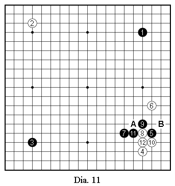 | Dia. 11: After 12, for White, A and B are miai. One must examine the follow up to this diagram. For Black, there is nothing good. For example, the author shows a futile try for Black (Dia. 12).
|
| 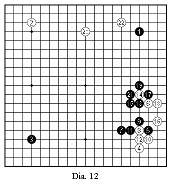 | 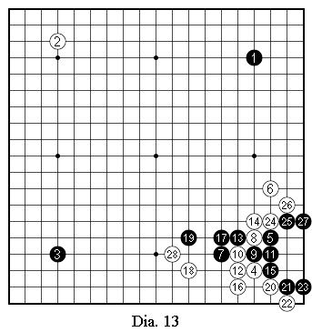 |
| 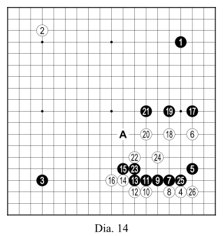 | 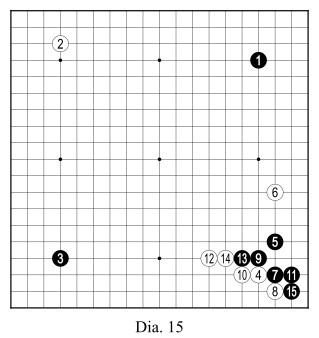 |
Dia. 14: We envisage play up to 26. If Black 21 at 22, White A. The author advices Black to follow the sequence in Dia. 15.
Dia. 15: This diagram is satisfactory for both. This series of a dozen diagrams is a study, a preparation, indispenable to predict the key issue of the game with any theoretical conviction. Go is a cartesian science. Even if we make errors on certain details, the moral basis of reasoning is indeniable.
After Dia. 1 below, the global context begins. The 15 preceeding diagrams served as local preparation.
| 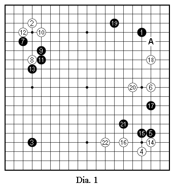 | Fig. 1: The sequence 9-11 is already a breaker for the shicho which can arise from the south east corner. In playing 10-18, White seems happy, because he has played on the 2 sides at the same time, but this is an illusion. According to the author, White ought to play 10 elsewhere (Dia. 1). White, having finished in sente in the north-west corner, should take the initiative in the east, because this resion will be the first front while the north-east corner is a secondary front. Who will play first in the east side? It is very urgent, more urgent than we think. Dia. 1: We imagine the sequence up to 22. The movement of the white stones is very harmonius. Black can play 19 at A. |
| 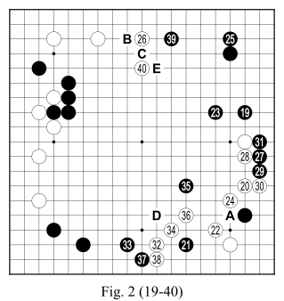 |
Fig. 2: After 19, White can not win. For White, to follow the sequence in Dia. 1 is already too late (Dia. 2). Dia. 2: Arriving at this stage (35), the defeat of White is seen clearly. But, beware, White launches a desperate kamikaze attack (Dia. 3). Dia. 3: It is the last throw before death. It is an extremely brutal savagery. If we play 22 at A, what happens? (Dia. 4, Dia. 5). |
| 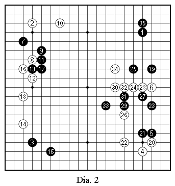 | 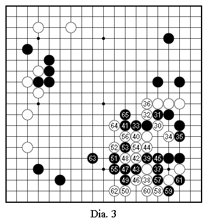 |
| 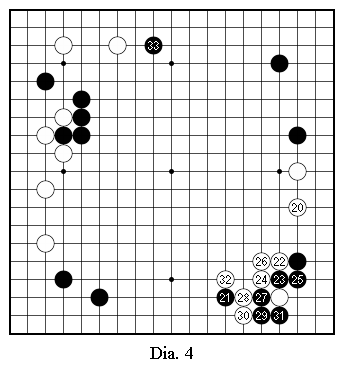 | 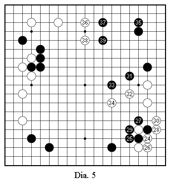 |
| 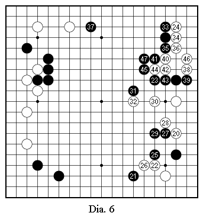 |
Dia. 4: Excessive loss for White. Dia. 5: It's worse than the preceeding diagram. If White is a strong player, upon seeing 23, he expects Black to play 25 after White 24, and he will try to counter the strategy of Black (Dia. 6). Dia. 6: For example, White braves an invasion at sansan (24). 30 and 32 are forced, since one of the two white groups (6-20-28-30 or 4-22-26) will be in danger. White still looks for a chance to counter, but the winds do not turn favourably for him. |
Suppose that, despite the humiliation, White must play 24. The move 25 of Fig. 2 seems slow and too prudent, but in reality, it has three objectives: to construct an indestructible fortress, to make an extension at B and eventually invade at 27. White is obliged to play on the north side of the board, not close to 25: either 26, or C. Dia. 7 is unthinkable.
| 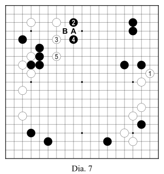 | 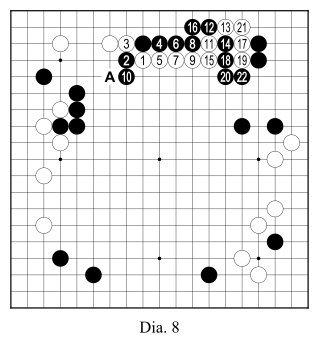 |
Dia. 7: White is obligated to play 3-5 to avoid the blockade. The black wall works well in silence, and menaces White. If White plays 3 at A, Black refutes with B (Dia. 8).
Dia. 8: If White 9 at A, Black 10 at 10; nothing is good for White.
Fig. 2: White can not go beyond 26, but Black can come in to 39; it is very annoying for White. The two black moves 27 and 29 are they not reckless? White should destroy the intrusion (Dia. 9).
Dia. 9: 31 is necessary to weaken White. After 33, White has two ways to attack: A (Dia. 10) and B (Dia. 12).
Dia. 10: All the moves up to 11 are forced. After 14, if White plays at B then what will happen? (Dia. 11)
| 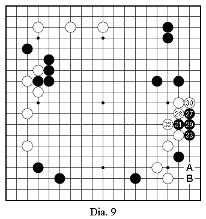 | 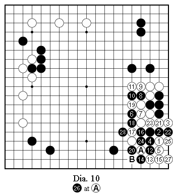 |
 |
 |
Dia. 11: For White, it is worse than the preceding diagram.
Dia. 12: After 4, to attack, White has nothing but 5. If 5 at A, Black 6 at B. Conclusion: White can not kill the invasion; he must accept the pain and wait for revenge: 32.
Fig. 2: White should not play 34 at D. The author will demonstrate the impossibility of killing the black group after 34 at D (Dia. 13-15).
Dia. 13: In this diagram, it is no longer a question of killing Black. Playing 5 at 7 is more lively, but - (Dia. 14).
Dia. 14: 8 is tesuji. After 12, White has two choices: 13 or 16. if White plays at 13, for Black things are easy. If White plays at 16, that will be a fight (Dia. 15).
 |
 |
 |
 |
| 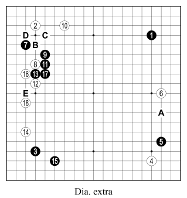 |
Dia. 15: After 20 and 22, there are some variations, but none which work for White. Verify for yourself. Fig. 2: If White does not answer 35, that allows a perfect shibori for White (Dia. 16). 38 is forced. 40 is basically forced; else Black plays at E. White can not play at E. If he plays this, Black plays tsukekoshi at C; the shicho does not work for White. In this game, no shicho works for White. The black wall 7-9-11-13-17 (Fig. 1) is a catastrophe for White. |
Before returning to the game, let us make a summary of what we have studied.
Dia. extra: It is the opinion of the author: 6->A, 7->B, 8->16, 10->C, 12->D, 18->E.
After 19, White has little choice globally. Notably, when playing 23, there are some global variations: a san-san in the north-east corner, or one in the south-west (less probable). The others are unthinkable. Even though we've played under 25 moves, the variations are very limited. The author has thus tried to confirm the defeat of White in a cartesian manner.
 |
Fig. 3: What is the global situation? The white territory in the south-east corner is well defined, about 35 points. The black territory in the north-east is evaluated at 45-50 points. After 45, the black territory in the south-west corner equals 20 points. The white territory on the west of the board comes to a little more than 15 points after 46. If White takes the initiative in the north of the board, this will make 20 points. For the moment, it is quite fragile. Everywhere, the black groups are robust. Moreover, it is Black to play. The author "scents" that Black is ahead by a 15 points. 41 is the biggest point. If White plays 44 at A, what to do? (Dia. 17). |
 |
 |
Dia. 17: It is a undesirable gote sequence for White. After having played 6-8, White plays 10.
After 45, 46 is the biggest; in playing that White threatens the black wall. 47 is forced. If Black omits this move, White will play it; the difference is enormous. In place of playing 46, if White plays 47, what will happen? (Dia. 18).
Dia. 18: After 2, White must play 3; he can not play at A. Then, Black plays 4. After the consolidation, Black will look for a chance to play at B.
It is urgent for White to play 50. To answer at 52 is pathetic and miserable. To help the isolated black stone, it is better to attack 50 from behind. White resists. 53 forces 54. At this stage, for Black, there is only one marvellous move. Go is a dream. Between dreams and reality, there is an unbridgable chasm. Nevertheless, it is better to dream: 55. The center is a minature map of the Pacific Ocean. The author remembers the naval combats, - at the Coral Sea, Midway, Solomon, Guam, Saipan -, for White the only thing is to penetrate the gaps. Where? Just 56.
| 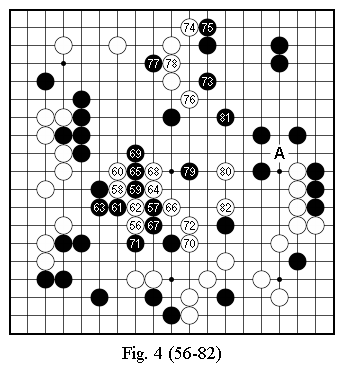 |
Fig. 4: Black should not play 57 at 64. 58-60 is shobute (alea jacta est, a risky move). Be careful Black! If he makes mistakes, the situation can be reversed. The sequence up to 72 is fine; the other variations aggravate the loss of White (Dia. 19-24). White looks for another chance. [*ATTENTION*] Dia. 19: 14 is forced. No alternative. The two black stones 4 and 10 cannot be taken, no shicho, no geta. Dia. 20: 18 is forced. White can not play 19 at 20. In this move sequence, there is no choice. |
 |
 |
* * *
While I looked at the sequence of 1-18 in figure 1, an idea suddenly came to me, until move 27: "Black is ahead by 15 points, the equivalent of a corner shimari." Without a serious preliminary study of what is happening on the east of the board after move 6 (Dia. 1-10, which the author hopes contain no errors), this intuition would not have appeared. Since that time, I have been obsessed by the need to verify my analysis, thus I am afraid of lacking impartiality and of having preferred Black. I've tried to do my best to neutralize this involuntary favouritism. During move than 45 days, I conceived in excess of 200 diagrams of which I removed the majority.
I imagine the case of Newton, since he watched "the apple fall" and he doubted something, he worked on the subject for a long time, energetically, never letting go of his intuition, in the spirit of a "pit bull". The author wishes to find "the diary" of Newton.
The same with Madame Curie; in observing the light of radium in the shadows, she decided to find the source of the light. Is this not then an obsession or better a stubborness of two scientists?
In answering a question posed by a journalist regarding sound and fury, William Faulkner said: "To write energetically about human folly until the end, it is my obsession".
An old german chemist succeeded to invent a medicine against syphillus called "606". For the 606th experiment, he came again.
For my part, during more than a month and a half, I experienced this sentiment. Stubborness, is it not the backbone of human enterprise? without any doubt, Go is a science, moreover it gives us a moral lesson on what hard science does not bring to us: "to learn to have a sense of shame" and "to know how to rid oneself of prejudice". On the latter point, if we make a mistake in direction on the goban, to realise our error an to correct it, that takes a lot of time; for the authot, 3-4 days to a week to correct a simple error. Go is at times a hard science and a human science. The hard science of go is not a philosophy, but it is a technique underpinned by a moral philosophy.
* * *
The people from Marseille (seminar 19/03/2000) and from Montreuil (seminar 01/04/2000), were completely dumbfounded by my astounding speech, their moves gaping without movement, languid, grumbling: "It is not clear. I am not convinced."
The author told himself: "It is completely normal, in more ways than one". This is not a one night spectacle. To try to understand, one must work and suffer. It is for that purpose that I had distributed photocopies of the game to the participants, 8 days in advance. Even though I never stop reproducing diagrams, even for myself, the conceived course sometimes seems impossible and unreal like in a science fiction novel or a detective novel. The impression must be stronger for the others. I wish for my readers to find potential errors in this article. I repeat that to protest against the author, one must absolutely present the diagrams to justify your opinion. Else, all is prejudiced. On the goban, the author has a good move, and the architect of a bad move does not exist. There are truths, and there are falsehoods.
* * *
Secondly, we are morons, Ewan-Ken-Ken. We are neither monkey not parrot. One must doubt, and be suspicious of what seems to be accepted wisdom. Doubt and suspicion are the starting point of all science. Doubt consists of the search for errors, and the science is to analyse and correct them with an independent spirit; it is the one true study.
In passing, the author has something to add on the notion of "an independent spirit". Firstly the case of Sartre; the author supposes that he does not like the word independence, because for him it signifies implicitly the existence of an Other (to be supreme or master) who dominates the spirit. He preferred the german word, "Selbstandigkeit" (self-standingness, to stand on a firm footing) This word is more energetic than independence. Secondly, Confucius has said "Aged thirty, I stood up firmly" (Analects of Confucius). Yet another wise man: Buddha. He advised his students: "Find your spirit, shape your spirit" (Sati Patt Hana). They are all atheists, and very lucid. The author belongs to that family.
* * *
Is Go useful? Manifestly, the theory of gravitation and the discovery of radium were useful for humanity. Go is a block of wood and pebbles. Confucius said "The wise man (junzi) should not play Weichi. He should work for the betterment of humanity. If a sweet little thing (xiao ren) plays Go, she will not have the time to do pointless things". The author dares to say that Go is a cultural parasite. Often he is known for his inane sentiment. He lost his will to continue the study of Go at this level after one and half months. Go is a vain passion. At the end of the day, it may be the same with life.
Here are three games from the international LG Cup played on 14/11/2000 at the Hôtel Lutétia, Paris.
Among the four games in total, there was only one good game (Lee Se Dol - Rui Nai Wei). All the other three were abominations, and there is nothing further to add. The author repeats again "the spirit of Go is to learn to have a sense of shame". It is for everyone. Confuscius said "When a man makes a mistake, we see his character","What cateogry of mistake?","When we have made a mistake, do not hesitate to correct yourself." It is self rigour, the sense of autocritic. It is that which corresponds to a commentary on a game of Go, without exception to the whole. An error committed should be a good lesson to learn for the future.
| 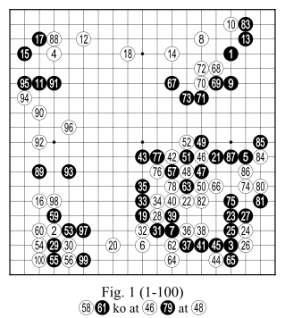 |
White: Ma Xia Chun Fig. 1: Up to move 10, it is the Chinese fuseki widely in fashion since several years. 16 is a spectacular error; the comment of Baduk, Choi 9 dan pro, nephew of Cho Chi Kun, said that thi move is questionable, but the author of this article emphaises that it is the losing move and because after move 17, 18 is forced - else, the black invasion at 118 will be terrifing -, the sequence 19-21 is played at the iniative of Black. That is to say that White should play 16 at 17 and follow the sequence in Dia. 1. |
Dia. 1: To rapidly get out of the black zone of influence, White plays 20 (see Dia. 2). If Black dares to play 21 at 28, what should White play? (Dia. 3).
Dia. 2: If White naively plays 20, Black at 25. 26 has a crafty air, but the result obtained up to 35 is not good for White.
| 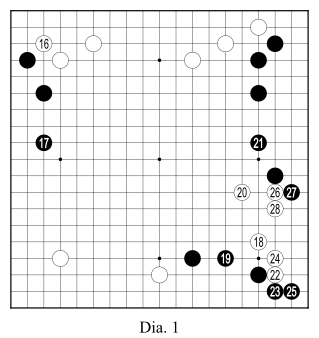 | 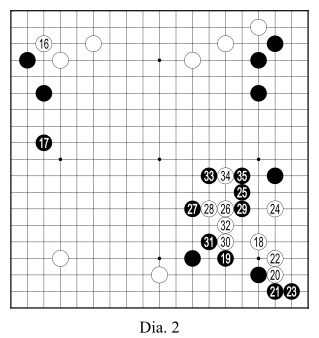 |
| 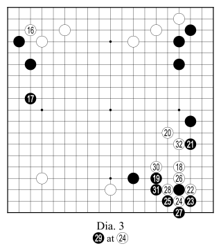 | 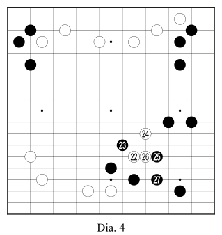 |
Dia. 3: At move 28, Black cannot start a ko. Grace of 28, White plays 30 in sente and in playing 32 he solidifies himself.
White will be tempted to play 22 at 40 (Dia. 4).
Dia. 4: After 27, it is clear that the presence of the 3 white stones is negative.
Dia. 5: If White plays 24 at the triangled stone in Dia. 5, Choi showed the sequence up to 16. The author completes it to help the readers understand. The sequence 17-23 is joseki. After 29, if White tries to erode the black moyo by an invasion at A, Black refutes with B, White C, Black D, White E, then Black F.
| 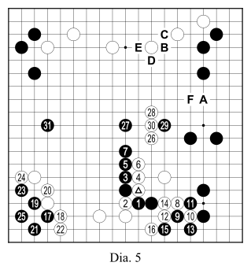 | 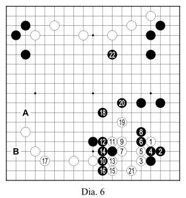 |
Again, Choi shows an other diagram (Dia. 6).
Dia. 6: He shows up to 9. So, the author shows what is next. In this case, 10 is katachi (shape). We imagine up to 22. 21 is forced. Next, Black will look to play at A, aim to play at B; it is a little uncomfortable for White.
Fig. 1: 29 is good timing. The double cut 19-28-31-32 is gote for White. 46-47 hints at an important ko battle. By 53, Black prepares an intrinsic ko menace. By consequence, White should play 46 at 52 (Dia. 7).
Dia. 7: 57 and 58 are miai. The game is still unfavourable for White.
Fig. 1: 75 is a nice move. 82 is forced. in playing 83 must say to himself that he has won. At the stage of 121, Black is twenty points ahead. White resigns after 197.
The style of Ma is very intelligent, according to what they say; he counts the points precisely. At the start of the game, he tries everywhere to win points in sente (move 16), and to erode the opponent's moyo from "a height" (move 22), while leaving bad aji at the same time. 16 is an unthinkable mistake for his level. In this game, he dazzled himself with his own intelligence.
| 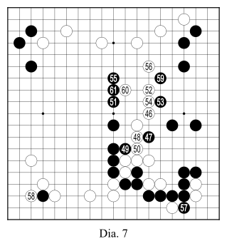 | 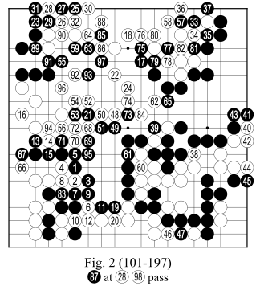 |
| 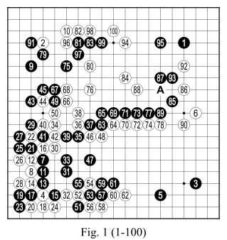 |
White: Lee Sé-Dol In the game commentary in Baduk, there was not much said regarding the north-east corner (we will return to this in Figure 1). The author wants to show his personal opinion. After the game, at the same table three people (Rui, her husband Jiang and Cho Hun Hyun) studied the opening of the game for three quarters of an hour. The author watched them from afar; he did not receive the impression that they reached a conclusion. The author of this article dares to say that black should have played 37 and 39 (Dia. 1). |
Dia 1: 44 is practically forced. After 51, the south of the board, is it not a pleasant land for black?
63 is shobute. If the author is white in this game, he would follow the sequence in Dia. 2.
Dia. 2 71 is a forced move, else white plays at A. After 74, black will play at 75. The move 76 is good timing. If black omits 77, white will play there. After 76, there is not much play left for either in the south-west corner.
| 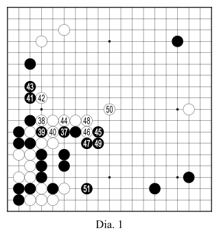 | 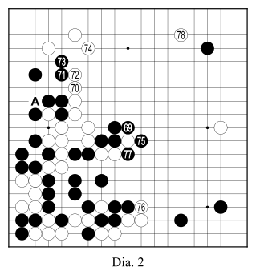 |
Sé Dol does not know how to submit; his style resembles Hononbo Shuei, or better that of Sakata "teeth gritted". It is inspiring. His motto in Go is "absolute conviction of victory". There we may recall the moral of Japanese officers in the jungles of the Pacific. His character diametrically opposes that of Lee Chang Ho who resembles a little bhikku or better an inscrutable Chinese. As I hear it, the two boys will face each other as finalists in the L.G. Cup. Rui Nai Wei has already said that in the future, Sé Dol will be a candidate to replace Lee Chang Ho.
Rui chooses a strategy of karami (attacking two groups). Under these conditions, we would say that this a game whose result walks on a tightrope; if one slips from the thread, one lands at the bottom of a precipice.
Move 79 is forced. In playing 76-80-84, white escapes from the danger zone. 91 is a questionable move; black should play somewhere close to hoshi on the north of the board. 93 is forced else white tsukekoshi at A.
Fig. 2: (Ko : 51, 54, 57, 60, 63, 66, 69, 72, 75, 78, 81). 101-103 is very funny, isn't it a waste of ko threats?
According to Baduk, move 108 is a global error (cf Dia. 3).
Dia. 3:It is a big shibori (squueeze). In these circumstances, white wins easily.
| 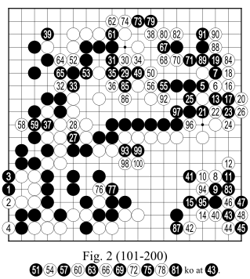 | 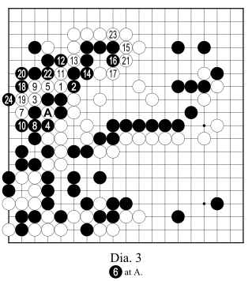 |
137 is forced. White should play 142 at 144, after which black has problems. With 145, black provokes the ko. It is a kamikaze gesture. Black has taken the south-east corner, white has taken the north-east. Black must absolutely play 91 at 92; after white A : white is comfortably ahead.
| 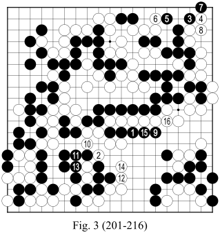 |
Fig. 3: Owing to a mistake from white, the game ends in a ridiculous manner. At the end of this game, the score between Rui and Sé Dol is 1 : 1. In the semi-final, Lee Chang Ho beat O'Rissei and Sé Dol beat Chu Hu Yang. |
It is a terrible stain on Master Cho. In Baduk, we do not speak of this game. According to the Chinese proverb “to progress we cannot forget the mistakes we made”.
At the start of August 1979, the author played a three stone handicap game with Master Cho on the Champs Élysées; he played like a little pig, at best at the level of 1st kyu to 1st dan. He published his autocritique in issue 16 of the RFG. its preface : “Come on, everyone will be amused by a long series of mistakes by Master Lim”. Since then, he has won the intrinsic right to criticise everyone else, and so, he terrorizes all the troublemakers.
The truth belongs to everyone. Time passes, and now it is for Cho to play and Lim to criticise. Everyone must await his turn, everyone must await his mistake.
* * *
| 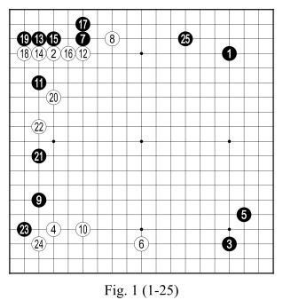 |
White: Cho Hun Hyun
Fig. 1: The author declares that after 25, academically, the game is finished; White has trouble continuing. |
When we are not confident, we have a tendency to stutter and stumble. The author insists that move 12 is questionable, mechanically played, and derived from the ”concept of joseki”. We absolutely must play in another direction: tsuke on 11. To the best of the author’s knowledge, no professional has played this move. My dear readers, you must judge with open mind the opinion of Master Lim (Dia. 3 and onwards).
| 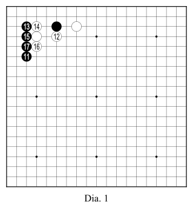 |
In the north-east corner, after 11, there are 2 types of joseki in fashion : Dia. 1 and Dia. 2 Dia. 1: We can see that the white shape is over-concentrated. Dia. 2: After 19, White will play at A or at B, but the results of these two choices are not obvious; in this state with a darkened soul Master Cho, without doubt, has played C, which is also considered joseki. Dia. 3: After 2, there are three possible answers : A, B and C. We will examine these three cases in complete games. |
| 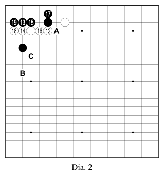 | 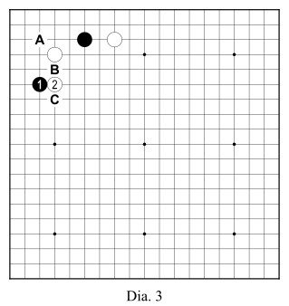 |
| 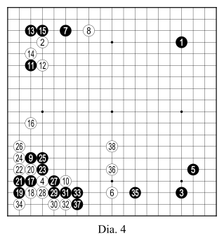 |
Case A :Dia. 4: If Black provokes something in the corner, we expect the sequence up to 34. Next, normally Black must play 35. 38 is a prudent move. To consolidate, Black must add a move. This diagram is not favourable for Black. Dia. 5: Neither is this diagram desirable. Dia. 6: This time, Black begins a big fight in the north-west corner. 26 is a good move. 27 is basically forced. 28 is active. After 32, for Black, we do not see a good perspective. |
| 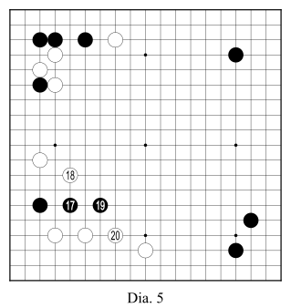 |
Dia. 7: To resist, Black plays 27. Move 28 is important. The sequence 35-42 is not very comfortable, because the black corner group is not yet alive. If Black plays 21 at 23? (Dia. 8). All this is desperation for Black. Move 8 in Fig. 1 is always well placed; that is to say that it is not right to play 12 in Fig. 1.
Dia. 9: We expect the sequence up to 44. If Black threatens White by playing at A, White actively refutes with the sequence A->H and makes outside influence. The black territory in the corner is less than 20 points. If Black plays differently, Dia. 10 to avoid the blockade, and if Black connects at 25 (Dia. 10), White plays at 26; it is the vital point.
Dia. 11: Move 14 is very important. Black cannot play 17 at 20 (Dia. 12).
Dia. 12: If White plays at A, the three stones 15-17-21 are captured. This diagramis not playable for Black.
Dia. 11 (next): White should not play 20 at 21. Move 21 is forced. 22 puts a bind on the corner. 24 dominates the whole game. After the tsuke of 2 in Dia. 3, there will be other variations, and
For dozens of years, the Chinese fuseki has been in fashion worldwide, in Korea, in China and in Japan. Personally, the author does not rate highly the low Chinese favoured by Lee Chang Ho. Here is the diagram.
|
In this state of affairs, is 8 well placed? Furthermore, it is Black to play. Everyone will say that the next move for black is at A. Incontestably, Lee is currently the strongest in the world of Go, but the global harmony and the aesthetics of Go do not always give the truth to the strongest. |
In mid January 1999, M. Takemiya payed a visit to the Centre culture du Japon in Paris to assist with the first game of the Kisei-sen between Cho Chi Kun and Koichi Kobayashi. The author had the temerity to ask of the promoter of the cosmic style his personal opinion on the Chinese fuseki of Lee Chang Ho; he was prudent. Simply, he said: “Evidently, Lee Chang Ho is the world number 1”. The author said to him that one day we will find a good measure against the Chinese fuseki of Lee.
Cho Hun Hyun and Yoo Chang Hyuk (Number 3 korean) I believe to be capable of finding an answer which is 100% impeccable. But Lee takes a road in another plane. Cho is not able to stop the march of his pupil. In the whole ensemble of this character of this quiet, unshakable boy like a stone Buddha, his master sensed, felt an unearthly presence.
Furthermore, on another subject, Takemiya consented to the author of this article “joseki favourite of Kato”.
I first heard of Maître Lim in Cambridge Go Club, at the Graduate Cafe, where Charles Matthews related how Lim Yoo Jong had once called him a pig. I have only seen Maître Lim once. That was at the Paris Open in 2005. The image of this rather frail long bearded man, nattering over a cup of tea with Yuki Shigeno was not something that inspired awe in me. Nor did it convey his celebrated brutality. Nonetheless, I noticed that he still[1] commanded a certain respect amongst his peers. On finding this booklet, I saw in its translation an obvious opportunity to study both language and Go. I embarked upon the task with a certain interest in what the man had to say, and I hope, dear reader, that you too can find some interest there. You will not find a beautiful translation, but then you shouldn't have expected to, should you?
The work was originally published as an A5 booklet by the Ligue de Go d'Ile de France in November 2001. This publication of this translation was kindly sponsored by the Irishi Press. It is dedicated to Matthew.
It would be thoughtless of me to attempt a biography of the man. I will just offer some trite sentences. Although I have translated his name as Master Lim, it was as Maître Lim that he was of course known. He was born in what is now North Korea, in the year 1924. Moving through China and Malaysia, he settled in France, where he lived until his death in 2016. It is often stated that he was responsible for developing Go in France. Fr example, one of his pupils became European Champion, he co-authored several popular manuals on the game, and indeed he was awarded the Médaille d'Or de la Jeunesse et des sports for his work in 1994. Go in France still remembers him.
[1] As a Druout once wrote "..well, I played with him once".